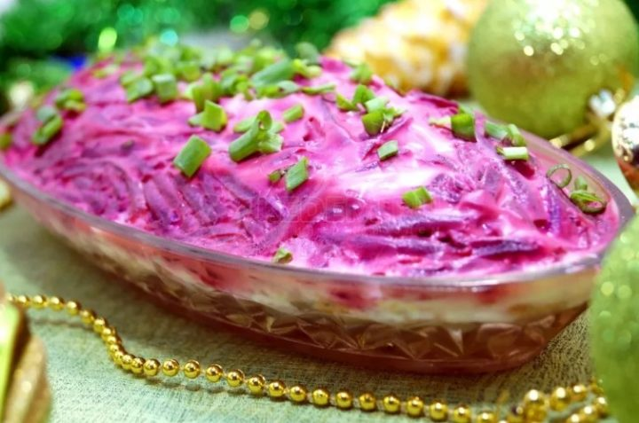

Сaлат «Селедка под шубой»
Ингредиенты:
- филе малосольной селедки — 300 г
- отварная свекла — 400 г
- яйцо — 5 шт.
- отварная морковь — 1 крупная
- зеленое яблоко — 1 шт.
- луковица — 1 шт.
- майонез — 200 г
Приготовление:
- Филе сельди нарезать мелкими кубками и выложить на сервировочное блюдо.
- Следующим слоем уложить тертое без кожуры яблоко.
- Картофель отварить в мундире, остудить и очистить. На слой яблока уложить слой тертого картофеля, немного посолить.
- Смазать слой картофеля майонезом.
- Выложить слой отварной тертой свеклы, посолить и смазать майонезом.
- Остудить в холодильнике пару часов. Посыпать мелко нарубленным зеленым луком.
- Салат «Селедка под шубой с яблоком» готов. Остудить в холодильнике и подавать к столу.